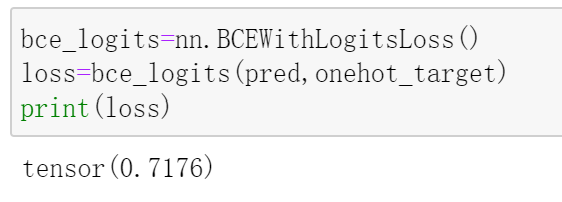

最近在做交叉熵的魔改，所以需要好好了解下交叉熵，遂有此文。
关于交叉熵的定义请自行百度，相信点进来的你对其基本概念不陌生。
本文将结合PyTorch，介绍离散形式的交叉熵在二分类以及多分类中的应用。注意，本文出现的二分类交叉熵和多分类交叉熵，本质上都是一个东西，二分类交叉熵可以看作是多分类交叉熵的一个特例，只不过在PyTorch中对应方法的实现方式不同（不同之处将在正文详细讲解）。
好了，废话少叙，正文开始~
二分类交叉熵
$$L=-\frac1N \sum_{i=1}^{N}[y_ilog(p_i)+(1-y_i)log(1-p_i)]$$
其中，$N$是总样本数，$y_i$是第$i$个样本的所属类别，$p_i$是第$i$个样本的预测值，一般来说，它是一个概率值。
上栗子：
| . | $y_i$ | $p_i$ |
|---|---|---|
| 第1个样本 | 1 | 0.8 |
| 第1个样本 | 0 | 0.2 |
| 第1个样本 | 0 | 0.4 |
按照上面的公式，交叉熵计算如下：
$$L=\frac13[(1log0.8+(1-1)log(1-0.8))+(0log0.2+(1-0)log(1-0.2))+(0log0.4+(1-0)log(1-0.4))]=0.319$$
其实，在PyTorch中已经内置了BCELoss，它的主要用途是计算二分类问题的交叉熵，我们可以调用该方法，并将结果与上面手动计算的结果做个比较：
嗯，结果是一致的。
需要注意的是，输入BCELoss中的预测值应该是个概率$p_i$。
上面的栗子直接给出了预测的$p_i$，这是符合要求的。但在更一般的二分类问题中，网络的输出取值是整个实数域(可正可负可为0)。
为了由这种输出值得到对应的$p_i$，你可以在网络的输出层之后新加一个Sigmoid层，这样便可以将输出值的取值规范到0和1之间，这就是交叉熵公式中的$p_i$。
当然，你也可以不更改网络输出，而是在将输出值送入交叉熵公式进行性计算之前，手动用Simgmoid函数做一个映射。
在PyTorch中，甚至提供了BCEWithLogitsLoss方法，它可以直接将输入的值规范到0和1 之间，相当于将Sigmoid和BCELoss集成在了一个方法中。
还是举个栗子来具体进行说明：假设pred是shape为[4,2]的tensor，其中4代表样本个数，2代表该样本分别属于两个类别的概率（前提是规范到了0和1之间，否则就是两个实数域上的值，记住，现在我们讨论的是二分类）；target是shape为[4]的tensor，4即样本数。
1 | pred=torch.randn(4,2)#预测值 |
在使用任何一种方法之前，都需要先对target做独热编码，否则target和pred维度不匹配：
1 | #将target进行独热编码 |
在做编码前，target看起来长这样：
1 | tensor([0., 1., 1., 1.]) |
编码后，target变成了这样：
1 | tensor([[1., 0.], |
现在，target的shape也是[4,2]了，和pred的shape一样，所以下面可以开始计算交叉熵了。
使用
Sigmoid和BCELoss计算交叉熵先使用
nn.Sigmoid做一下映射：
可以看到，映射后的取值已经被规范到了0和1之间。然后使用
BCELoss进行计算：
- 只使用
BCELossWithLogits计算交叉熵

两种方法的计算结果完全一致。不过官方建议使用BCELossWithLogits，理由是能够提升数值计算稳定性。
以后，当你使用PyTorch内置的二分类交叉熵损失函数时，只要保证输入的预测值和真实标签的维度一致（N,…），且输入的预测值是一个概率即可。满足这两点，一般就能避免常见的错误了。
(BCELoss的使用)
关于二分类交叉熵的介绍就到这里，接下来介绍多分类交叉熵。
多分类交叉熵
$$L=-{\frac1N} {\sum_{i=1}^{N}} {\sum_{c=1}^{K}} y_{ic}log(p_{ic})$$
其中，N代表样本数，K代表类别数，$p_{ic}$代表第i个样本属于类别c的概率，$\sum_{c=1}^{K}p_{ic}=1,i=1,2,…,N$，$y_{ic}\in {0,1}$，可以看作一个one-hot编码（若第i个样本属于类别c，则对应位置的$y_ic$取1，否则取0）。
这个公式乍看上去有点复杂，其实不难。不妨取第$i$个样本，计算这个样本的交叉熵，公式如下：
$$L_i=\sum_{c=1}^{K}y_{ic}log(p_{ic})$$
假设N=2, K=3，即总共3个样本，3个类别，样本的数据如下
|. | $y_{i1}$| $y_{i2}$ |$y_{i3}$|$p_{i1}$|$p_{i2}$|$p_{i3}$|
| :——–: | :——–:| :——: |:——:|
| 第1个样本 | 0| 1 |0|0.2|0.3|0.5
| 第2个样本 | 1| 0 |0|0.3|0.2|0.5
| 第3个样本 | 0| 0 |1|0.4|0.4|0.2
$$L_1=0log(0.2)+1log(0.3)+0log(0.5)=-1.2039$$
$$L_2=1log(0.3)+0log(0.2)+0log(0.5)=-1.2039$$
$$L_3=0log(0.4)+0log(0.4)+0*log(0.2)=-1.6094$$
看吧，最终的交叉熵只不过是做了N这样的计算，然后平均一下，加个负号：
$$L=-\frac13(L_1+L_2+L_3)=1.3391$$
你可能已经发现，这里的$p_{ic},c=1,2,3$之和为1。没错，这是网络的输出做了softmax后得到的结果。在上一部分关于二分类的问题中，输入交叉熵公式的网络预测值必须经过Sigmoid进行映射，而在这里的多分类问题中，需要将Sigmoid替换成Softmax，这是两者的一个重要区别！
现在让我们用代码来实现上面的计算过程：
1 | #预测值，假设已做softmax |
这和我们之前手动计算的结果是一样的。代码很简单，只需注意代码中的one_hot*log是逐元素做乘法。
以上是其内部实现原理。在实际使用时，为了方便，PyTorch已经封装好了以上过程，你只需要调用一下相应的方法或函数即可。
在PyTorch中，有一个叫做nll_loss的函数，可以帮助我们更快的实现上述计算，此时无需对target进行独热编码，于是代码可简化如下：
1 | import torch.nn.functional as F |
等等，还没完。在PyTorch中，最常用于多分类问题的，是CrossEntropyLoss.
它可以看作是softmax+log+nll_loss的集成。
上面的栗子中的预测值是已经做完softmax之后的，为了说明CrossEntropyLoss的原理，我们换一个预测值没有做过softmax的新栗子，这种栗子也是我们通常会遇到的情况：
1 | #4个样本，3分类 |
先按照softmax+log+nll_loss的步骤走一遍：
1 | logsoftmax=F.log_softmax(pred) |
直接使用CrossEntropyLoss:
1 | res=F.cross_entropy(pred, target) |
结果是一样的。

(CrossEntropyLoss的使用)
参考：